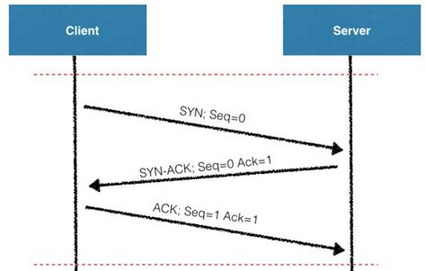
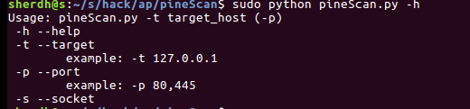
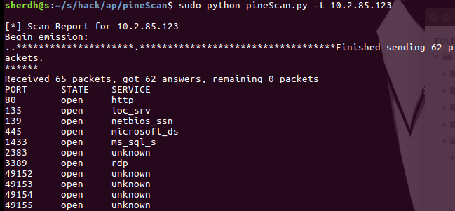

准备事宜
scapy库git clone https://github.com/secdev/scapy.git
cd ./scapy
python setup.py
构思
放个三次握手原理图

与被扫描机进行SYN握手，返回数据包不带 RST 标识就是开放了端口
基本思路参考
完整的项目我放到了github上
预定义的全局变量
#目标ip与端口 |
getopt模块处理用户输入
def usage(): |
socket扫描核心代码
socket扫描写都写了，懒得删了…emmmmdef socket_scan(target, port):
#socket全连接
global socket_flag
try:
conn = socket.socket(socket.AF_INET, socket.SOCK_STREAM)
#设置超时
conn.settimeout(2)
conn.connect((target, port))
lock.acquire()
print '[*] %d/tcp open %s\r' % (port,port_list[port])
#计算开启的端口
socket_flag = socket_flag + 1
except:
#线程释放
lock.release()
conn.close()
syn扫描核心代码
def syn_scan(ip,ports): |
扫描调用模块
#以逗号分割端口号 |
实际结果展示


还算可以，技术所限，大佬轻喷